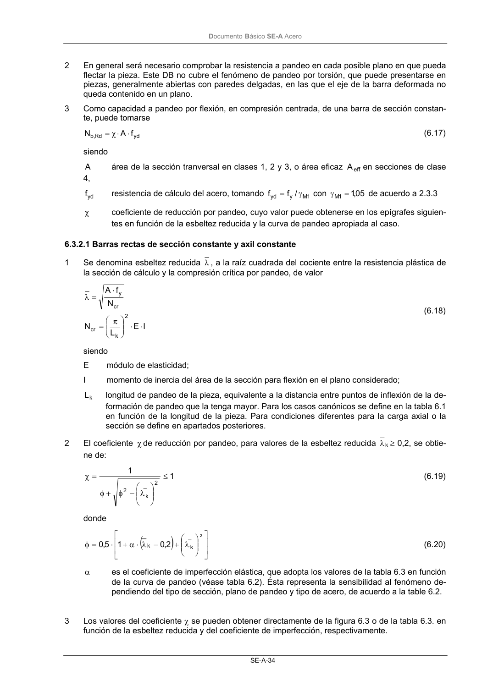
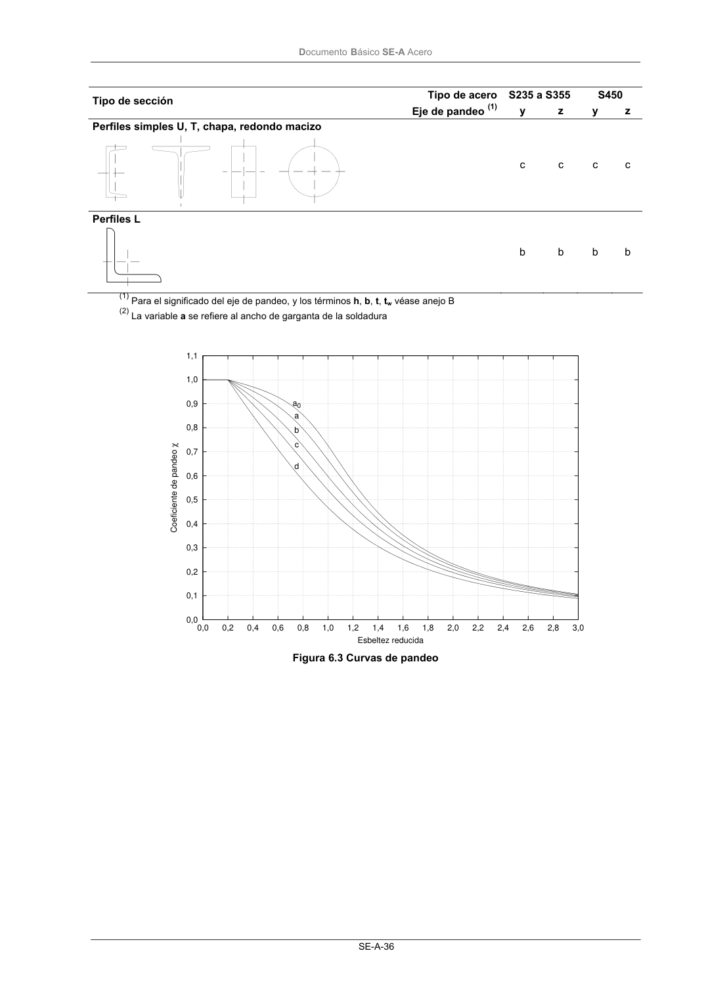

DB-SE-A Acero · edición 2007-10-23 · capa oficial
Documento DB-SE-A-oficial · SHA-256 del PDF 9ed9ea694aabfbda3bfbbef40dfe9223fde05d13c35bc2ba9751e5a96a22a64f
Copia fiel del PDF fuente · Fuente oficial
Ficha de la disposición en la fuente oficial
Formatos: JSON del segmento · Markdown
sección se define en apartados posteriores. 2 El coeficiente χ de reducción por pandeo, para valores de la esbeltez reducida k λ≥ 0,2, se obtie- ne de: 1 1 2 _ k 2 ≤ λ − φ + φ = χ (6.19) donde ( ) ) λ + − λ ⋅ α + ⋅ = φ 2 _ k k 2,0 1 5,0 (6.20) α es el coeficiente de imperfección elástica, que adopta los valores de la tabla 6.3 en función de la curva de pandeo (véase tabla 6.2). Ésta representa la sensibilidad al fenómeno de- pendiendo del tipo de sección, plano de pandeo y tipo de acero, de acuerdo a la table 6.2. 3 Los valores del coeficiente χ se pueden obtener directamente de la figura 6.3 o de la tabla 6.3. en función de la esbeltez reducida y del coeficiente de imperfección, respectivamente. DocumentoBásico SE-A Acero SE-A-35 Tabla 6.1 Longitud de pandeo de barras canónicas Condiciones de extremo biarticulada biempotrada empotrada articulada biempotrada desplazable en ménsula Longitud k L 1,0 L 0,5 L 0,7 L 1,0 L 2,0 L Tabla 6.2 Curva de pandeo en función de la sección transversal Tipo de acero S235 a S355 S450 Tipo de sección Eje de pandeo(1) y z y z h/b > 1,2 t ≤ 40 mm a b ao ao 40 mm < t ≤ 100 mm b c a a h/b ≤ 1,2 t ≤ 100 mm b c a a Perfiles laminados enI t > 100 mm d d c c t ≤ 40 mm b c b c Perfiles armados enI t > 40 mm c d c d Agrupación de perfiles laminados soldados c c c c laminados en caliente a a a0 a0 Tubos de chapa simples o agrupados conformados en frío c c c c soldadura gruesa: a/t > 0,5 b/t < 30 h/tw < 30 c c c c Perfiles armados en cajón (2) en otro caso b b b b DocumentoBásico SE-A Acero SE-A-36

